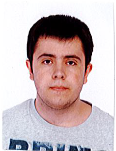

Miembros
José Ángel Garrido Montoya
- Email: jgarri04@ucm.es
- Foto:
-
- Aficiones e intereses
- Loco de la programacion, me gustan los videojuegos, viajar, aprender cosas nuevas y los animales raros.
Christian González García-Muñoz
- Email: christig@ucm.es
- Foto:
-
- Aficiones e intereses
- Aficionado a la informática en general, deporte sobre todo el futbol y la F1 y me encanta el cine y las series
Alejandro Huertas Herrero
- Email: alehuert@ucm.es
- Foto:

-
- Aficiones e intereses
- Música, tecnología en general, viajar (sobre todo al extranjero). Estoy interesando en el mundo del big data y la minería de datos. También me gusta coleccionar figuras, o diferentes objetos relacionados con películas, videojuegos, etc... Por último, me gusta bastante el mundo de la conducción.
Héctor Valverde Bourgon
- Email: hectoval@ucm.es
- Foto:
-
- Aficiones e intereses
- Videojuegos (sobre todo el lol), hacer deporte, la musica. Me interesa el gimnasio y saber mas sobre esto cada dia